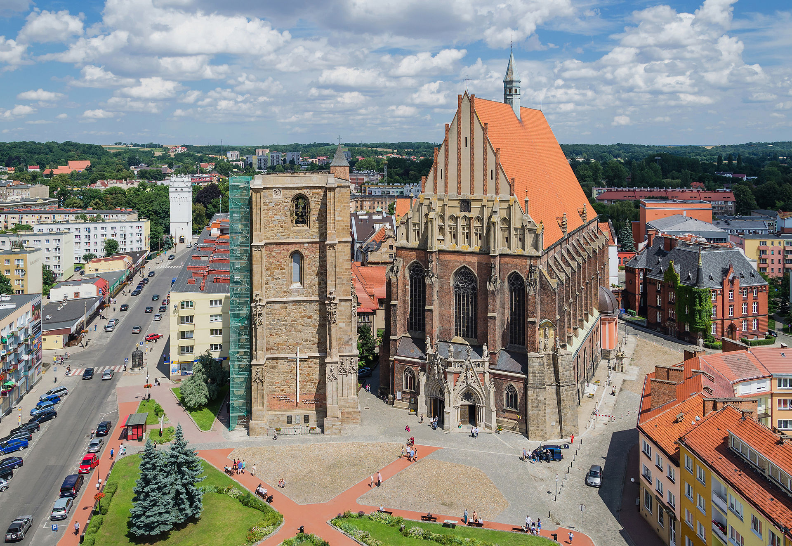
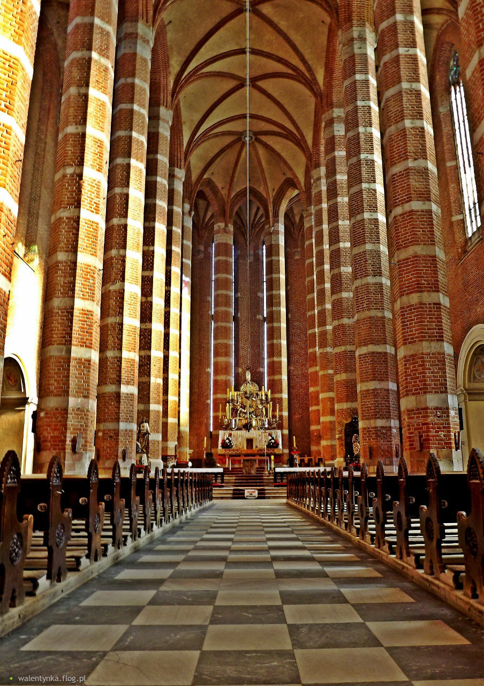

Kościół par. pw. św. Jakuba i św. Agnieszki
Największym obiekt sakralny w mieście i cenny zabytek. Z uwagi na wielkość bryły, uwarunkowania historyczne, oraz pochowanych we wnętrzu biskupów, jak też istnienie do niedawna seminarium duchownego, w mowie potocznej przez mieszkańców nazywany jest Katedrą. Jest kościołem dekanalnym. Oficjalnie tytuł bazyliki przyznano świątyni w 2009. 28 lutego 2011 roku obiekt uznany za Pomnik historii. Obok kościoła wznosi się okazała, czterokondygnacyjna wieża – dzwonnica. Powstała początkowo z fundacji bpa Rudolfa v. Rüdesheim. W roku 1474 rozpoczęto budowę, która trwała z przerwami aż do roku 1548, jednak nigdy nie została ukończona i taka też pozostała wieża do dziś. Zbudowana na planie kwadratu z cegły obłożonej kamienną wykładziną, przy narożach wzmocniona silnie występującymi skarpami. Zwraca uwagę piękna dekoracja rzeźbiarska, dzieło nieznanych nam dzisiaj kamieniarzy.